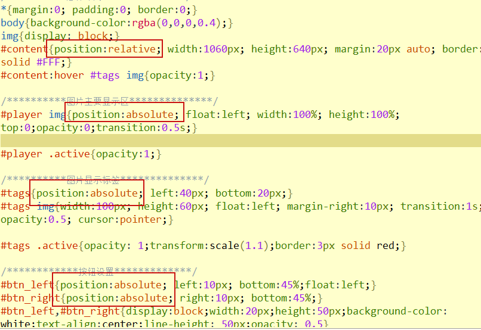
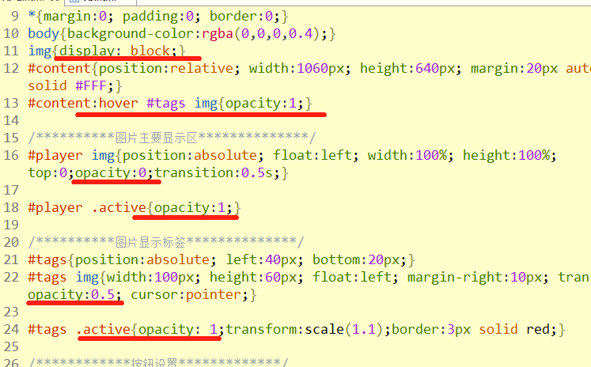
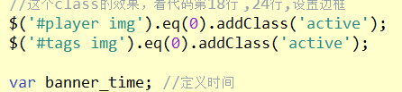
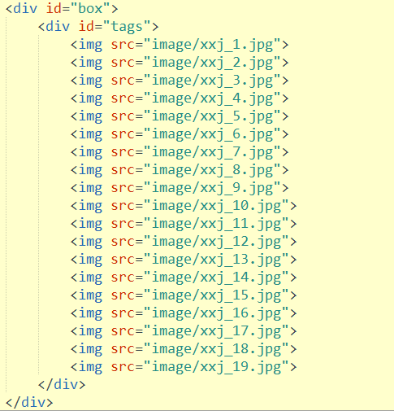
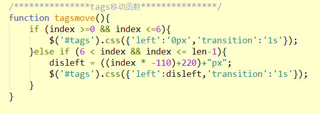
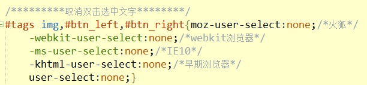
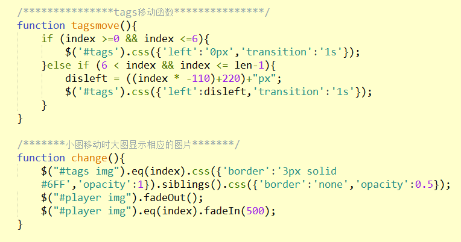
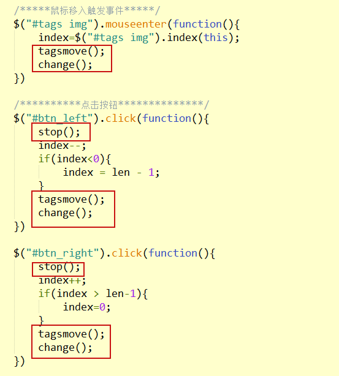
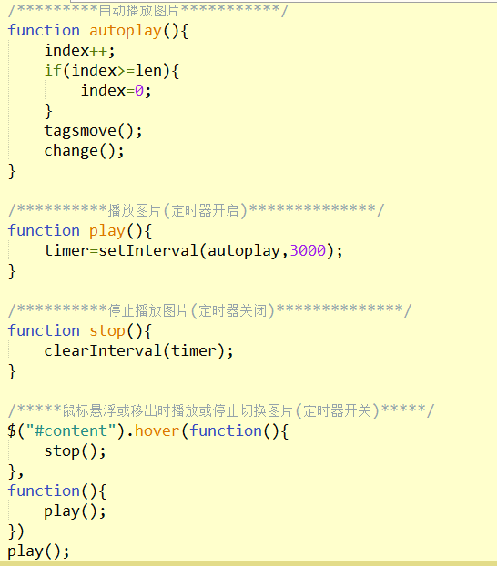

<body>
<div id="content">
<!--主显示区-->
<div id="player">
<img src="image/xxj_1.jpg">
<img src="image/xxj_2.jpg">
<img src="image/xxj_3.jpg">
<img src="image/xxj_4.jpg">
<img src="image/xxj_5.jpg">
<img src="image/xxj_6.jpg">
<img src="image/xxj_7.jpg">
<img src="image/xxj_8.jpg">
<img src="image/xxj_9.jpg">
</div>
<!--显示标签-->
<div id="btn_left">< </div>
<div id="box">
<div id="tags">
<img src="image/xxj_1.jpg">
<img src="image/xxj_2.jpg">
<img src="image/xxj_3.jpg">
<img src="image/xxj_4.jpg">
<img src="image/xxj_5.jpg">
<img src="image/xxj_6.jpg">
<img src="image/xxj_7.jpg">
<img src="image/xxj_8.jpg">
<img src="image/xxj_9.jpg">
</div>
</div>
<div id="btn_right">></div>
</div>
<audio autoplay="autoplay" loop="loop">
<source src="./music/仙剑奇侠传一 - 蝶恋 - 月如.mp3" type="audio/mpeg">
</audio>
</body>
/**********整体布局**********/
*{margin:0; padding:0; border:0;}
body{background-color:rgba(0,0,0,0.4);}
img{display: block;}
#content{position:relative; width:1060px; height:640px; margin:20px auto; border:2px solid #FFF;}
#content:hover #tags img{opacity:1;}
/**********图片主要显示区**************/
#player img{position:absolute; float:left; width:100%; height:100%; top:0;opacity:0;transition:0.5s;}
#player .active{opacity:1;}
/**********图片显示标签**************/
#tags{position:absolute; left:40px; bottom:20px;}
#tags img{width:100px; height:60px; float:left; margin-right:10px; transition:1s; opacity:0.5; cursor:pointer;}
#tags .active{opacity: 1;transform:scale(1.1);border:3px solid red;}
/************按钮设置*************/
#btn_left{position:absolute; left:10px; bottom:45%;float:left;}
#btn_right{position:absolute; right:10px; bottom:45%;}
#btn_left,#btn_right{display:block;width:20px;height:50px;background-color: white;text-align:center;line-height: 50px;opacity: 0.5}
#btn_left:hover,#btn_right:hover{transform:scale(1.1); cursor:pointer;}

$(function(){内容})
var banner_time; //定义计时器
var index = 0; // 获取下标
var len = $('#player img').length; // 元素的个数
var len = $('#player img').length; // 元素的个数
index=$("#tags img").index(this); // 获取当前显示的图片的下标值


/*********显示和隐藏图片************/
$("#player img").hide();
$("#player img").eq(index).show();
$("#tags img").eq(index).css({'border':'3px solid #6FF','opacity':1});
function banner(){
index ++;
if(index > len - 1){ //判断如果index超过了大图的长度-1，就回到第0张
index = 0
}
$('#player img').removeClass('active').eq(index).addClass('active'); //所有大图隐藏,大图第index张图片显示
$('#tags img').removeClass('active').eq(index).addClass('active'); //所有小图清掉样式，比如：边框，透明度等,小图第index张图片显示
}
banner_time = setInterval(banner,3000); //定时器调用此函数
/*******小图移动时大图显示相应的图片*******/
function change(){
$("#tags img").eq(index).css({'border':'3px solid #6FF','opacity':1}).siblings().css({'border':'none','opacity':0.5});
$("#player img").fadeOut();
$("#player img").eq(index).fadeIn(500);
}
/*左按钮，返回上一个元素*/
$("#tags img").eq(index).prev().css({'border':'3px solid #6FF'}).siblings().css({'border':'none'});
$("#player img").eq(index).prev().fadeIn(500);
/*右按钮，进入下一个元素*/
$("#tags img").eq(index).next().css({'border':'3px solid #6FF'}).siblings().css({'border':'none'});
$("#player img").eq(index).next().fadeIn(500);
banner_time = setInterval(banner,3000); //设置定时器，每三秒播放一次
$('#tags img').hover(function(){ //小图鼠标移动上去时触发事件
clearInterval(banner_time); //取消定时器，让轮播器暂停
$('#player img').removeClass('active').eq($(this).index()).addClass('active');
$('#tags img').removeClass('active').eq($(this).index()).addClass('active');
index = $(this).index(); //然后让index等于当前鼠标移动上去图片的索引值。
banner_time = setInterval(banner,3000); //继续让轮播器播放
})
/*********左按钮事件绑定************/
$('#btn_left').click(function(){
clearInterval(banner_time); //取消定时器，让轮播器暂停
index --; //每次点击的时候，索引值 - 1；
if(index < 0){ //判断如果索引值小于0，那么就去到最后一张图片
index = len - 1;
}
$('#player img').removeClass('active').eq(index).addClass('active');
$('#tags img').removeClass('active').eq(index).addClass('active');
banner_time = setInterval(banner,3000);
})
/*********右按钮事件绑定************/
$('#btn_right').click(function(){
clearInterval(banner_time);
index ++;
if(index > len - 1){
index = 0
}
$('#player img').removeClass('active').eq(index).addClass('active');
$('#tags img').removeClass('active').eq(index).addClass('active');
banner_time = setInterval(banner,3000);
})
#content:hover #tags img{opacity:1;}
#tags img:hover{transform:scale(1.1); cursor:pointer;}
#btn_left:hover,#btn_right:hover{transform:scale(1.1); cursor:pointer;}
$("#player img").fadeOut();
$("#player img").eq(index).fadeIn(500);
#content #box{position:absolute;height:100px;width:996px;left:40px; bottom:20px;overflow: hidden;}

index --; //每次点击的时候，索引值 - 1；
if(index < 0){ //判断如果索引值小于0，那么就去到最后一张图片
index = len - 1;
}
index ++; //每次点击的时候，索引值 + 1；
if(index > len - 1){ //判断如果索引值超出元素个数-1，那么就返回第一张图片
index = 0
}
var disleft = 0 //定义标签移动距离




